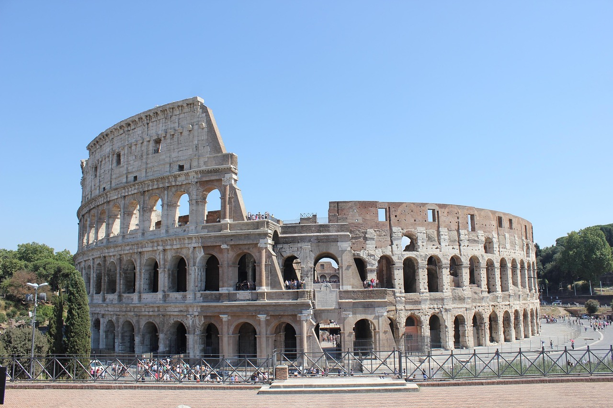

As 7 Maravilhas do Mundo Moderno são monumentos de imensa importância cultural e arquitetônica, reconhecidos globalmente por sua grandiosidade. Essas maravilhas são uma homenagem às realizações da humanidade em diferentes épocas e regiões, destacando a diversidade e o esplendor do patrimônio mundial.
A Grande Muralha da China é uma impressionante estrutura de defesa que se estende por milhares de quilômetros através do território chinês, testemunhando a engenhosidade e o trabalho árduo de gerações de construtores.

Imagem de heike2hx por Pixabay
Localizado no topo do Morro do Corcovado, no Rio de Janeiro, o Cristo Redentor é uma icônica estátua de Jesus Cristo com os braços abertos, simbolizando a paz e a acolhida.

Imagem de Jose Guertzenstein por Pixabay
Machu Picchu é uma antiga cidade inca, situada no topo de uma montanha nos Andes, um exemplo notável da arquitetura e da engenharia inca, além de ser um importante sítio arqueológico e um destino turístico popular.

Imagem de Alberto Benini por Pixabay
Chichén Itzá é um complexo de ruínas maias na Península de Yucatán conhecido por sua pirâmide escalonada, chamada de "El Castillo", e por seus templos e observatórios astronômicos, representando o esplendor da civilização maia.

Imagem de RODRIGO Rodrigo por Pixabay
Um dos símbolos mais reconhecíveis de Roma, o Coliseu é um antigo anfiteatro onde ocorriam espetáculos de gladiadores e outras formas de entretenimento na Roma Antiga.
Imagem de Maite Rodríguez por Pixabay
Petra é uma antiga cidade esculpida em rocha, situada entre as montanhas do deserto jordaniano, conhecida por seus edifícios e túmulos esculpidos nas encostas das montanhas.

Imagem de üåºChristelüåº por Pixabay
O Taj Mahal é um magnífico mausoléu de mármore branco, construído pelo imperador mongol Shah Jahan em memória de sua esposa Mumtaz Mahal; é uma das maravilhas arquitetônicas mais famosas do mundo.

Imagem de Bitu Das por Pixabay